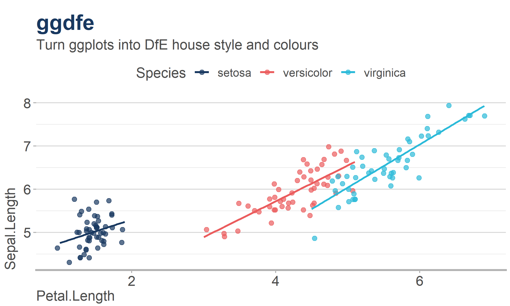
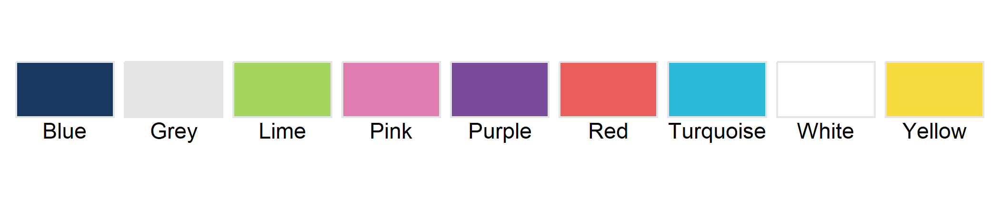

This package seeks to create an easy theme to add to any ggplot to keep it in line with DfE brand guidelines.
Colours
There are two functions that work to add in colour scales: scale_fill_dfe() and scale_colour_dfe(). These replace the usual scale_colour_*() and scale_fill_*() functions to change colours on ggplot.
These are the base colours

There are also palettes, passed to the ‘palettes’ argument. These are for selecting a suitable subset of the colours above, depending on if you need a discrete, continuous or diverging palette.
- main - Blue red turquoise (discrete, 3 colours)
- warm - Red to purple (continuous)
- cool - Blue to lime (continuous)
- full - all colours in the brand (discrete, 7 colours)
- likert - red to blue, grey midpoint (diverging)
- likert2 - green to purple, white midpoint (diverging)
- likert3 - red to blue, white midpoint (diverging)
- heat - white to red (continuous)
- heat2 - white to pink (continuous)
- cold - white to blue (continuous)
- cold2 - white to turqouise (continuous)

Exaples of usage would be:
ggplot2::ggplot(data = iris)+
ggplot2::aes(x=Sepal.Length, colour = Species)+
ggplot2::geom_density(linewidth = 1.5)+
scale_colour_dfe(palette = "main")+
ggplot2::theme_minimal()